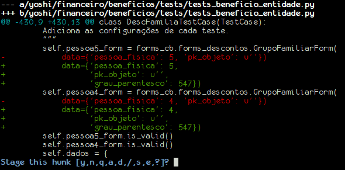
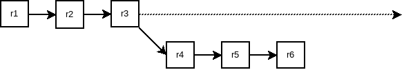
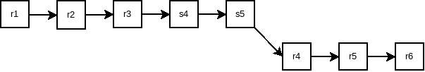

GIT + GIT-SVN
GIT Básico
O "index"
O conceito do "index" é o que mais diferencia o GIT do SVN (e outros SCVs).
"index" contém as alterações que gerarão uma revisão, não os arquivos. Isso só é estranho por causa do comando para adicionar alterações no index.
git add file.py: Adiciona as alterações do arquivo no "index".
(Se o arquivo nunca teve uma revisão, o conteúdo inteiro do arquivo é adicionado.)
git commit: Transforma o index em uma revisão e guarda no repositório local.
(git commit -a gera um index com todas as alterações e gera uma revisão).
git push: Envia as revisões locais e envia para um servidor SSH/HTTPS/GIT.
Até aqui, SVN parece melhor por ser mais simples: mandar alterações para o servidor é feito
num único passo (svn commit) enquanto o GIT requer 3 (git add,
git commit, git push).
Onde o GIT se sobresai
git add -p file.py
Permite selecionar quais alterações irão para o index.
(Excelente para aqueles momentos de "fiz duas alterações de dois issues diferentes.")
@@ -485,7 +485,7 @@ class GerenciadorForm(TestCase):
"""
curso = EntidadeCursoCurriculoGraduacao.objects.get(pk=1001)
- ano_periodo = AnoPeriodoGraduacao.objects.get(pk=1)
+ ano_periodo = AnoPeriodoGraduacao.objects.get(pk=1001)
# Populando o field com None.
dados = {'pessoa_fisica': u'5',
Stage this hunk [y,n,q,a,d,/,e,?]?
E ainda é útil para aquela última revisada antes de gerar uma revisão.
Cores!
git stash
- Guarda as alterações que não estão no index e deixa separado.
git stash popreaplica as alterações.- Vários "stashes" podem existir ao mesmo tempo (e podem ser aplicados em qualquer ordem).
git log
- Igual ao
svn log, mas não precisa de less (e nada de "broken pipe" ao fechar o log). - Cores!
git log --raw: mostra os arquivos alterados dentro da revisão.git log -u: mostra as alterações dentra da revisão.
git commit --amend
Permite alterar um commit depois de feito.
git bisect
Percorre os commits em forma de árvore binária, para procura de "onde esse bug foi introduzido?"
- Mostra as alterações em um ponto do histórico de revisões.
- "O bug está aqui?"
- Se sim, volta metade das revisões entre a revisão inicial e a atual.
- Se não, avança metade das revisões entre a revisão final e a atual.
Repositório local
Como o repositório é local, vários commits podem ser feitos sem serem enviados ao servidor.
"Meu branch tá todo quebrado, mas ninguém vai ver isso!"
Parênteses
As ferrametnas de code review para GIT são geralmetne melhores de serem usadas de que as de outros SCVs.
Bem legal, mas...
Mas eu uso SVN!

GIT-SVN to the rescue!

GIT-SVN é uma módulo do GIT que cria e mantém um repositório local GIT usando um servidor SVN.
Alguns comandos mudam.
(... pelo menos aqueles ligados ao acesso do servidor.)
git addcontinua igual (-ptambém continua).git commitcontinua igual.- ... na verdade, todos os comandos mostrados anteriormente não mudam.
Criar o repositório GIT a partir do SVN:
git svn clone http://blahblahblah.com/blah/blah/branch/blah
A yoshi/google/alias/forms.py
A yoshi/urls.py
A requirement.txt
W: +empty_dir: yoshi/autenticacao/esqueceu_senha/fixtures
W: +empty_dir: yoshi/autenticacao/login/templates/busca
W: +empty_dir: yoshi/core/busca/templates
W: +empty_dir: yoshi/core/geral/templates/search
W: +empty_dir: yoshi/templates/agenda/busca
r4531 = b3667a084e7d69080e0f1c7235b94dab9cb5a326 (refs/remotes/git-svn)
A yoshi/financeiro/cadastro_beneficio/__init__.py
A yoshi/financeiro/cadastro_beneficio/models.py
A yoshi/financeiro/__init__.py
r4532 = 65ce3a96d11c13d0be24836af3a276561885118c (refs/remotes/git-svn)
M yoshi/settings.py
M yoshi/modulos.py
É clonado o repositório e todos os commits.
Portanto, não se assuste.
Baixar as alterações do servidor SVN:
git svn rebase
Na verdade, busca commits existentes no servidor que não estejam no repositório local e aplica antes dos commits locais.
Árvore de revisões antes do rebase:
Árvore de revisões depois do rebase:
Subir alterações para o servidor SVN:
git svn dcommit
Qual a vantagem de usar GIT ao invés de SVN, então?
- Commits mais granulares.
- Branches locais.
- Commits mesmo quando a rede está fora.
- Compatível com qualquer versão do SVN.
Novo workflow
- Alterar código.
git addalterações.git svn rebasepara verificar se há alterações upstream.git commit.- Não satisfeito? GOTO 1.
- Tudo Ok?
git svn dcommit.